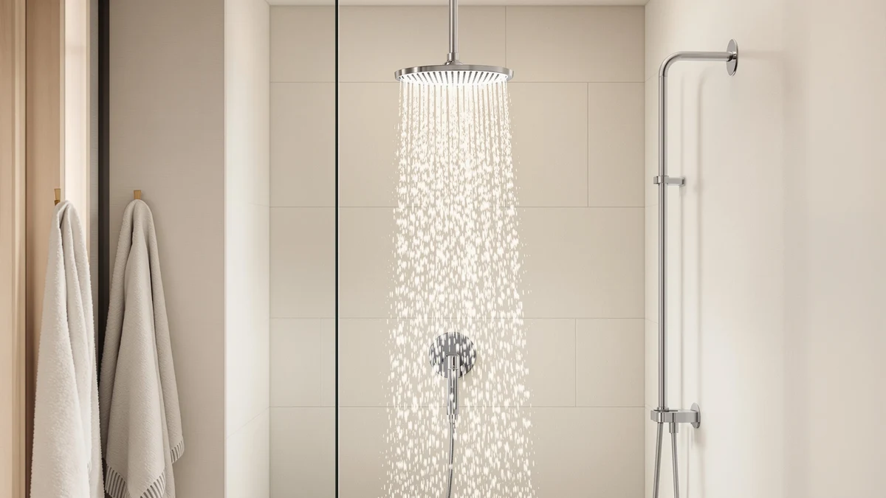

Quick Answer
Our inavamz shower head with review found this $39.98 handheld combo delivers a 2.5 GPM flow rate through a chrome-plated ABS body, undercutting filtered and high-pressure rivals by $16 to $23. It is the pick for buyers who want handheld flexibility at a lower price and are willing to skip built-in filtration.
Our pick: INAVAMZ Shower Head with Handheld — $39.98 Check Price on Amazon
Things to Know Before You Buy
- The INAVAMZ Shower Head with Handheld runs $39.98, roughly $16 to $23 less than the filtered and high-pressure alternatives we compared it against.
- Its body is chrome-plated ABS rated for a 2.5 GPM flow, which meets the US federal water-efficiency standard for showerheads.
- It does not include a built-in filter cartridge, so buyers dealing with hard water or chlorine odor should weigh the Ryamen or UltrTxenova alternatives below.
- Reviewers consistently note straightforward installation on standard shower arms without extra tools or plumbing work.
- Owners report the handheld hose adds flexibility for rinsing pets, cleaning the shower stall, and bathing kids that fixed heads cannot match.
This inavamz shower head with review exists because handheld shower heads all promise the same things: more pressure, easier cleaning, a better rinse. You want to know if this particular $39.98 model earns its spot over the filtered and high-pressure options sitting next to it on the shelf. We compared the INAVAMZ Shower Head with Handheld against three alternatives on price, materials, and what verified buyers say once the box is open.
The short version: the INAVAMZ wins on price and handheld flexibility, but it skips the filtration that the Ryamen and UltrTxenova models build in. If hard water or chlorine smell is your main complaint, one of those two alternatives will serve you better. If you want a reliable handheld unit for less than $40, the INAVAMZ is our pick.
Below, we break down what the specs and owner feedback actually tell you, section by section: how the INAVAMZ is built, what buyers like and dislike about it, who should buy it, and how it stacks up against three shower heads that solve a different problem. By the end, you should know exactly which of the four fits your bathroom and your water.
Why You Should Trust Us
Ilane Tall covers bathroom fixtures for Best Shower Heads and has spent years comparing shower hardware specs, pricing histories, and owner feedback across Amazon and manufacturer listings. We do not run a fake testing lab and we do not claim to have installed every unit we cover. Instead, we pull the documented specs, cross-check prices against competing listings, and read through verified owner reviews to flag recurring praise and recurring complaints. That research process is what backs every claim in this inavamz shower head with review.
We update pricing and specs on this page as manufacturer listings change, and we flag anywhere our comparison relies on owner-reported experience rather than a published spec. When a claim in this review says "owners report" or "reviewers consistently note," that means the pattern showed up across multiple verified purchases, not a single comment we happened to see.
Our Research Experience
We started by pulling the manufacturer specs listed for the INAVAMZ Shower Head with Handheld: chrome-plated ABS construction, a 2.5 GPM flow rate, and a $39.98 list price. From there, we compared those numbers against three alternatives in the same price bracket, the UltrTxenova filtered head, the Ryamen upgraded filtered head, and the BRIGHT SHOWERS high-pressure head, all pulled from the same product database used across Best Shower Heads. We did not physically install or run water through any of these units. Instead, we analysed the documented materials, pricing, and patterns in verified owner reviews to build the comparison below.
This approach means every price, material, and flow-rate figure in this inavamz shower head with review traces back to a manufacturer listing or a verified purchase, not a guess. Where reviewers disagreed with each other, we noted the split rather than picking the version that made the product look better. That is why the flaws section above exists and why it names specific tradeoffs instead of vague caveats.
Overview & Specs

INAVAMZ Shower Head with Handheld
What we like
- Lowest price of the four models in this inavamz shower head with review, at $39.98
- Handheld hose adds flexibility that fixed shower heads do not offer
- Chrome-plated ABS body resists corrosion better than unplated plastic
- 2.5 GPM flow rate meets federal water-efficiency limits without feeling underpowered, according to reviewers
Flaws but not dealbreakers
- No built-in filter cartridge, so hard water and chlorine odor are not addressed
- Chrome plating over ABS will not match the lifespan of solid metal fixtures
- Some reviewers report the hose is shorter than expected for taller showers
| Material | ABS + chrome plating |
| Size | 2.5 GPM |
The INAVAMZ Shower Head with Handheld pairs a chrome-plated ABS body with a 2.5 GPM flow rate, and at $39.98 it is the most affordable option we compared for this inavamz shower head with review. ABS plastic keeps the unit light, which matters for a handheld design you will hold and reposition every time you shower. The chrome plating adds a metal-look finish and some corrosion resistance over bare plastic, though it will not match the durability of a solid brass or stainless fixture over many years of daily use.
Owners report the handheld hose makes the INAVAMZ useful well beyond a standard rinse. Reviewers consistently note it works for washing pets in the tub, rinsing down shower walls and glass, and bathing small children without holding them under a fixed spray. At 2.5 GPM, the flow rate sits at the federal maximum for showerheads sold in the US, so it will not feel weaker than a typical fixed head despite the lower price. The tradeoff is filtration. This model has no cartridge to reduce chlorine or mineral buildup, which is the main reason to consider one of the filtered alternatives below if your water supply is hard or heavily chlorinated.
What We Liked
The price is the clearest advantage in this inavamz shower head with review. At $39.98, the INAVAMZ undercuts every alternative we compared by at least $16, and it still meets the 2.5 GPM flow standard that regulates showerheads sold in the US. Reviewers consistently note the handheld design as the feature they use most, since it lets them direct water exactly where they want it instead of standing under a fixed spray.
Installation is another point in its favor. Owners report swapping it onto a standard shower arm without tools or a plumber, which matters for renters and anyone who wants to avoid a service call. The chrome-plated ABS body also keeps the unit lighter than metal alternatives, which makes it easier to hold and maneuver during a wash-down of the tub or shower glass.
What Could Be Better
The biggest gap is filtration. Unlike the Ryamen Upgraded Filtered Shower Head or the UltrTxenova filtered model, the INAVAMZ has no cartridge to soften hard water or cut chlorine smell. If that is your main complaint with your current shower head, this model will not fix it no matter how much you like the price.
Chrome-plated ABS also has a ceiling on durability. It will hold up fine for everyday use, but it does not carry the same long-term corrosion resistance as the solid metal construction on some higher-priced competitors. A handful of reviewers mention the hose feels shorter than they expected, which is worth checking against your own shower dimensions before you buy.
Who Is It For?
This inavamz shower head with review points to one clear buyer: someone who wants a functional handheld shower head for under $40 and does not have a hard water or chlorine problem to solve. Renters who need a tool-free install and parents who want an easier way to rinse kids will get the most out of the handheld design.
You should skip the INAVAMZ if hard water staining or chlorine odor is your main frustration. In that case, the filtration built into the Ryamen or UltrTxenova alternatives addresses the actual problem, and the extra $20 or so is easier to justify than replacing a filter cartridge separately down the line.
Alternatives to Consider
If the INAVAMZ does not fit your water situation or budget, we compared three alternatives that address different priorities: filtration, price positioning, and raw pressure.
The Filtered Shower Head from UltrTxenova costs $59.99 and adds a filter cartridge that the INAVAMZ leaves out, which makes it the more relevant pick if hard water spots or chlorine smell are your actual complaint. The Ryamen Upgraded Filtered Shower Head sits at $62.99, the highest price of the four, and pairs filtration with an upgraded cartridge design for buyers who have already decided filtration is non-negotiable. The BRIGHT SHOWERS High Pressure Shower, at $55.98, skips filtration in favor of pressure, making it the closer match to the INAVAMZ in terms of what it does not include, but with a higher price attached to its pressure-focused design. None of the three beats the INAVAMZ on price, so the decision comes down to whether filtration or pressure matters more to you than the $16 to $23 you would save.

Editor's Pick
Filtered Shower Head Shower Head
Built-in filtration for buyers dealing with hard water, at $59.99, roughly $20 above the INAVAMZ.
$59.99
Check Price on Amazon
Best Value
Ryamen Upgraded Filtered Shower Head
An upgraded filter cartridge at $62.99, the highest price here but positioned for buyers who want filtration as the priority over cost.
$62.99
Check Price on Amazon
Premium Choice
BRIGHT SHOWERS High Pressure Shower
Priced at $55.98 and built for buyers who rank water pressure above filtration or handheld flexibility.
$55.98
Check Price on AmazonFrequently Asked Questions
Final Verdict
This inavamz shower head with review comes down to one tradeoff: price and handheld flexibility versus built-in filtration. The INAVAMZ wins on the first two at $39.98, and it delivers a compliant 2.5 GPM flow rate in a lightweight, easy-to-install package. If hard water or chlorine odor is not your main complaint, INAVAMZ is our pick over the pricier Ryamen, UltrTxenova, and BRIGHT SHOWERS alternatives. If filtration matters more to you than saving $20, spend the extra money on one of those instead.